阅读博客的朋友可以到我的网易云课堂中，通过视频的方式查看代码的调试和执行过程：
http://study.163.com/course/courseMain.htm?courseId=1002830012
一节我们讨论了Thompson构造的算法后，从这节开始，我们通过代码着手实现该算法，本节主要讨论算法要用到的数据结构，同时我们从简单入手，先对简单的正则表达式构建其对应的NFA状态机，以后我们再一步一步的向构建更复杂的状态机延伸。任何复杂的形态都建立在多种简单形态的组合之上。
NFA节点的数据结构表示：
通过Thompson构造法产生的状态机有如下特点：
1. 状态机一定只有一个初始状态节点和一个结束状态节点。
2. 任何一个状态，最多只有两条出去的转换边。
3. 每个状态节点所拥有的边最多只有三种可能：
（1） 有一条边对应的是单个输入字符，例如：
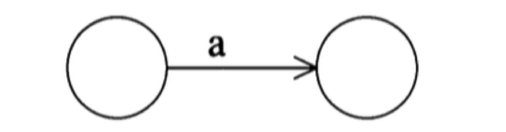
（2） 有一条边，对应的是ε：
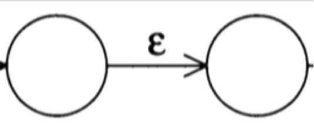
（3） 有两条出去的边，对应的都是ε：
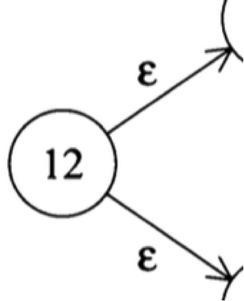
对应上述几个特点，我们在程序中，通过下面的数据结构来描述一个NFA的节点(eclipse)：
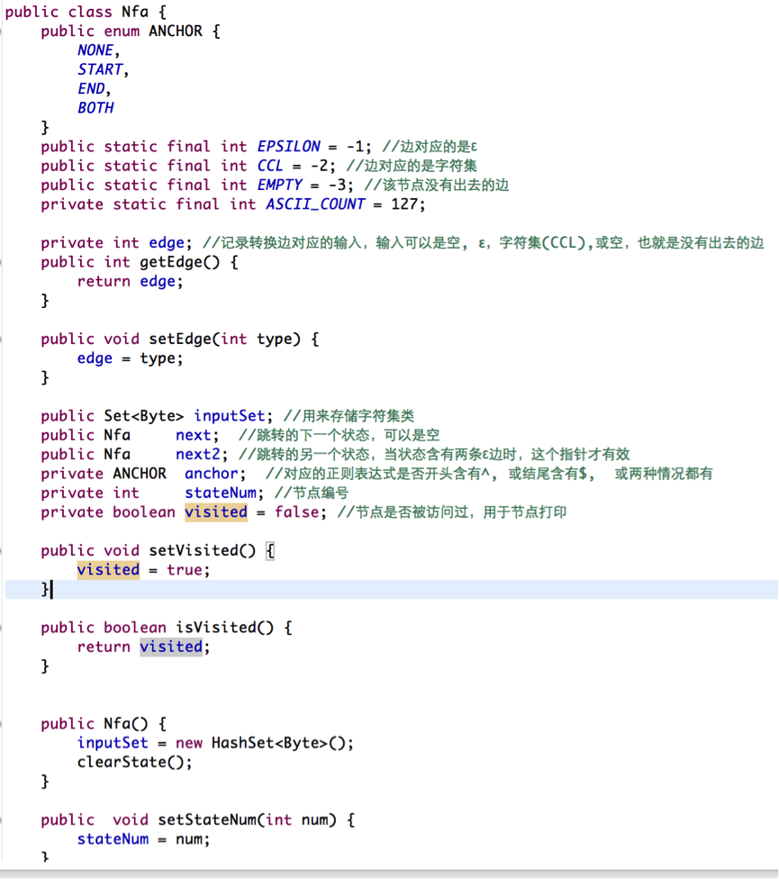
Nfa 对应于状态机的一个节点，如果该节点的边对应情况1，那么next2 等于null, next 指向下一个状态，同时edge的值对应该边的输入字符。如果该边对应的输入是一个字符集类，例如[0-9]，那么所有可接受的字符都存放在inputSet中, 同时,edge的值等于CCL。
如果该节点只有一条出去的ε边，那么next 指向下一个状态节点, next2 等于 null, edge 的值等于 EPSILON.
如果该节点有两条出去的ε边，那么next 和 next2 分别指向要转换的下一个节点，同时edge的值等于 EPSILON.
如果该节点没有出去的边，那么next 和 next2 都是null, edge 的值就是EMPTY.
inputSet 专门用来存放字符集类，由于我们只处理ASCII输入，因此iputSet最多包含127个元素。 例如表达式[a-z]接收任何小写字母，这样inputSet 就用来存储a 到 z 的26个字母的ASCII 值。对这个集合，我在代码中专门定义了一个取补操作Nfa::setComplement，例如 [^a-z] 接收的是任何不是小写字母的ASCII 字符,要使得inputSet中存放所有不是小写字母的ASCII码符号，需要的操作是先将a到z这26个字符加入到inputSet, 然后调用setComplement接口，这样inputSet存储的就是所有非小写字母的ASCII字符的集合了，我们从代码上可以理解上面讲的逻辑:
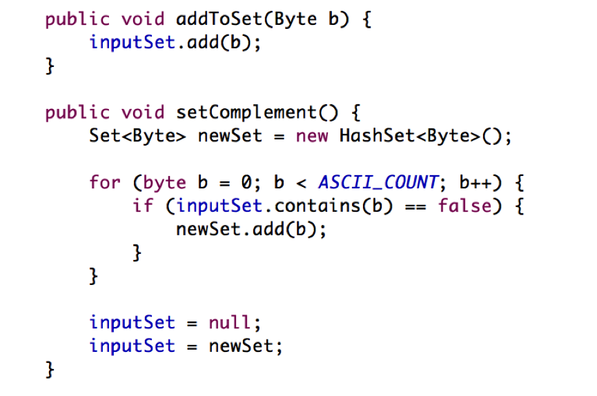
节点的内存管理
当程序要生成一个NFA节点对象时，它不会直接调用new, 在程序中，我们专门使用一个类叫NfaManager来负责NFA节点的构造和回收。
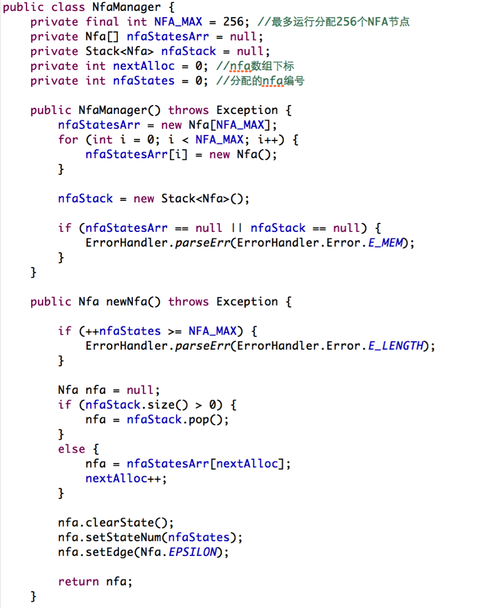
当它初始化时，先构造足够多的NFA节点对象放在内存池中，当外界需要获取一个NFA节点时，调用它的newNfa 接口，该接口先查看节点是否已经分配光了，如果没有可用节点，则显示内存错误。要不然在堆栈上看有没有原先被回收的节点可以使用，如果有，则将栈上的节点返回，如果没有，那么再从内存池中分配一个节点。
当外界不再需要NFA节点对象后，调用它的discardNfa接口，该接口将回收的节点放到堆栈上，以待将来复用。
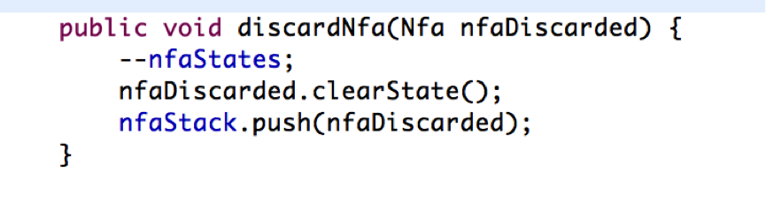
大家回忆一下前面提到的有Thompson 构造出来的Nfa限状态机(打开相应文档), 它有一个特点就是，通过Thompson 构造算法构建的状态机，它必有一个起始状态，和一个结束状态，因此我们专门定义了一个类，来存储这两个状态：
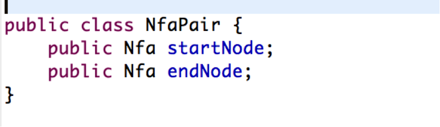
该类很简单，也就是两个指针，一个指向头，一个指向尾。
NFA状态机构造实现：
在代码中，NfaMachineConstructor.java 专门负责通过读入正则表达式来构造状态机。我们通过简单到复杂的方式，一步一步剖析Thompson构造算法。
首先，我们先看最简单的正则表达式，单字符匹配 ：c 是如何构造的。在代码中，接口 NfaMachineConstructor:constructSingleCharacter.
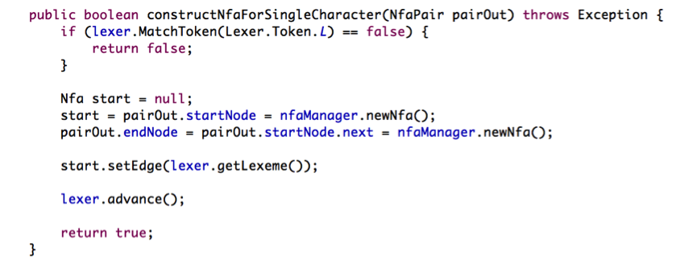
首先，我们判断当前正则表达式是否是单字符匹配，如果是，那么我们分别分配两个Nfa节点作为头和尾。头节点是pairOut.startNode, 尾节点是pairOut.endNode. 接着把头结点的next 指向尾节点。同时将头节点的edge设置为匹配字符的ascii 值。总体流程如下：
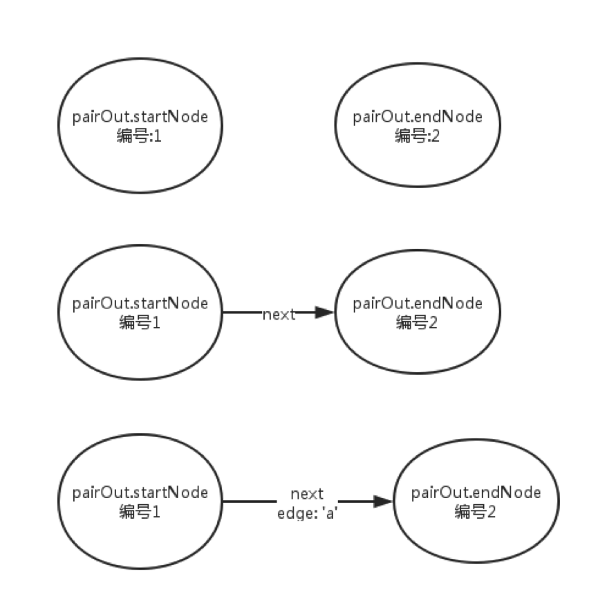
接下来我们看看，正则表达式 “.” 也就是匹配任意单字符，是如何构造Nfa状态机的:
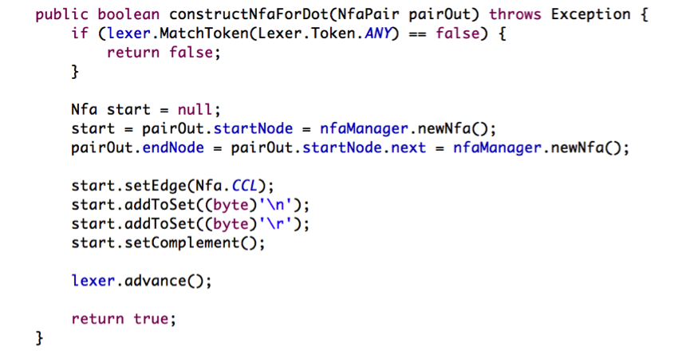
首先，判断当前表达式是否匹配 . , 如果匹配，我们往下走构建单字符匹配的Nfa状态机器。第一步任然是先分配起始节点和结束节点。第二步，将起始节点的next指针指向结束节点。接下来要注意的是，匹配任意字符，意味着当输入为任何ASCII 字符时，除了回车换行两个字符外，我们的状态机都会接收。因此我们的状态机接收的是一个字符集类，[…] 中括号里面的三点表示除了\r \n 外的任何ASCII 字符， 因此我们把起始节点的edge 设置为 CCL. 然后把\r \n 加入集合，并对结合做补操作，也就是把集合当前的元素去掉，将不是当前元素的其他元素加入集合，总体流程如下：
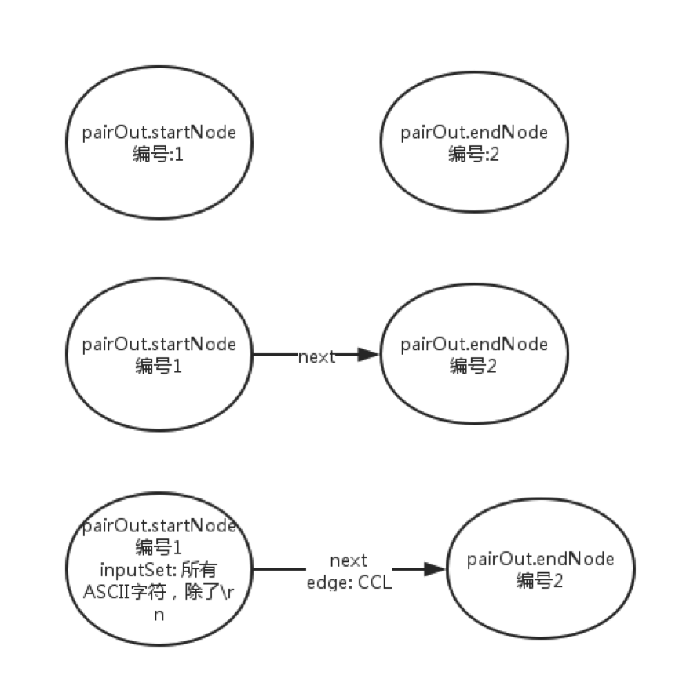
接下来我们看看，字符集类的正则表达式如何构建Nfa状态机，例如:[abcd], 该字符集类匹配a,b,c,d4个字符, [0-9] 匹配0到9九个数字:
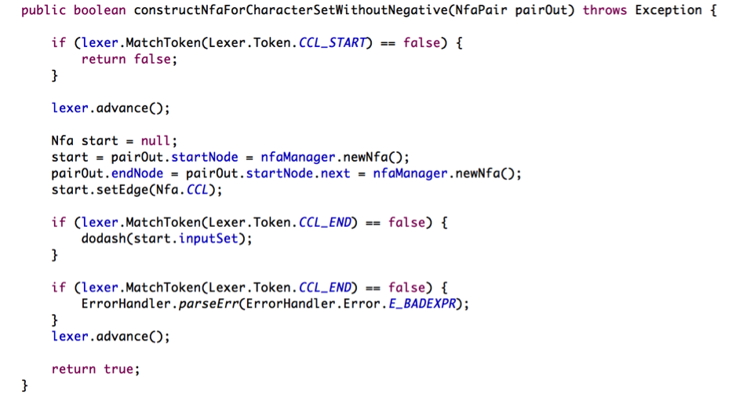
一开始，我们任然分配两个节点作为起始和结束。由于识别的是字符集类，所有edge设置为CCL, 接下来调用dodash 函数将字符集类对应的字符放入到Nfa节点的inputSet 中，然后再检查正则表达式有没有以 ] 作为结束，如果有 [ 做为开头，但没有以 ] 作为结束，那么正则表达式是错误的，要通过ErrorHandler输出错误，我们再看看dodash的实现:

如果字符集类是[abcd]这种没有横杆的情况，那么 if (lexer.MatchToken(Lexer.Token.DASH) == false) 里面的代码会被执行，这样a,b,c,d四个字符，或者说[ 和 ]之间的字符会被加入到inputSet中， 如果有横杆，例如[0-9] 那么下面的for 循环会执行，它会把0 到 9 之间的数字字符加入到inputSet中， 总体流程如下:
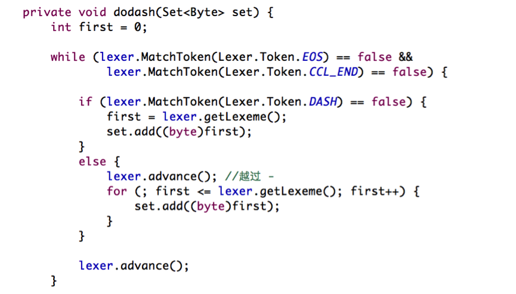
最后我们看看对字符集类进行取反的情况，例如形如[^0-9], 也就是匹配所有不是数字字符，它的实现简单，首先完成上面所做的步骤，然后调用setComplement对inputSet做取补操作就可以了：
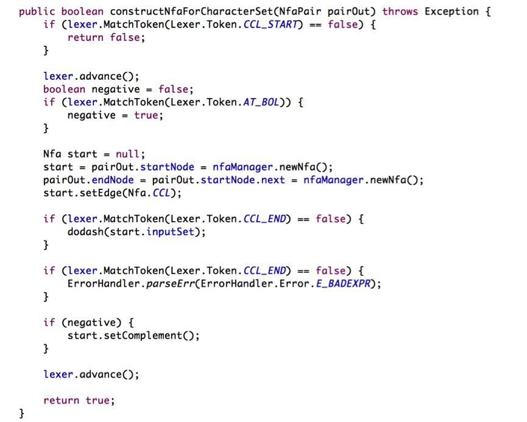
if(lexer.MatchToken(Lexer.Token.AT_BOL)) 用于判断[之后是不是跟着^，如果是，那意味着取反操作，于是先将字符集加入到inputSet，然后再对inputSet调用setComlement, 从而实现取反结果。
最后，我们把前面这几种操作结合起来，放入到一个函数叫term中：
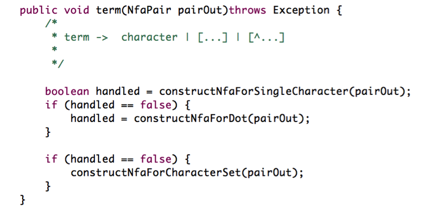
只要调用term, 我们便可以根据具体情况，构造上面说过的几种Nfa有限状态自动机。接下来，我将以单行调试的方式向大家展示相关代码的实现逻辑